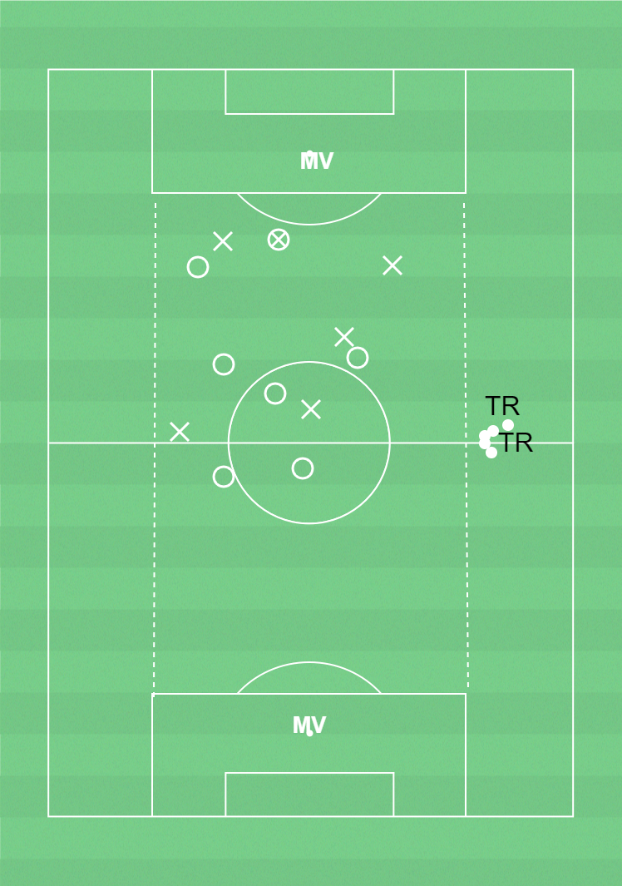

Speluppbyggnad
För att behålla bollen inom laget och ta sig förbi motståndarnas lagdelar med kontroll.
Speluppbyggnad
1) Spela genom motståndarnas lagdelar (speldjup framåt)
2) Spela utanför motståndarnas lagdelar (spelbredd)
3) Spela bakåt för att spelvända (speldjup bakåt)
Förhindra speluppbyggnad
1) Förhindra att motståndarna spelar genom och mellan lagdelarna
2) Forward styr mot en sida (av planen), laget flyttar över mot bollsida
3) Pressa för att erövra bollen när laget är samlat
2 lag om 7 spelare (6 utespelare och 1 målvakt). Spelytan cirka 35x20m
1 målvakt på varje kortsida. 2 lag har varsin boll som ska spelas från den ena målvakten till den andra. Alla spelare i laget måste haft bollen innan passning till målvakt.
Bryt övningen för genomförande av förberedelseträning utifrån de fem övningskategorierna med jämna mellanrum.